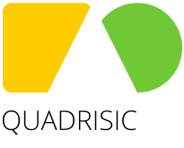
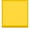

A puzzle game made by Olav Lindekleiv for the 48 hour game compo LudumDare 35. Theme: Shapeshifting
Use the mouse pointer to select a shape. Get as many other shapes of this kind inside your selection, for more points. On mobile, tap to select, and tap again to confirm move.
The game has three shapes. Squares turn into triangles, while triangles turn into circles, and circles turn back into squares.
 » » » » ...
See the scoring table for more information on point scoring.
Start game Back to game| Number of same shape | Points scored |
|---|---|
| {{points[0]}} | {{points[1]}} |
Points: {{points}}
{{activePoints}} points selected
Game over!
You got {{points}} points.
Play again